Did You know? A lion's roar can be heard from as far as 5 miles away.
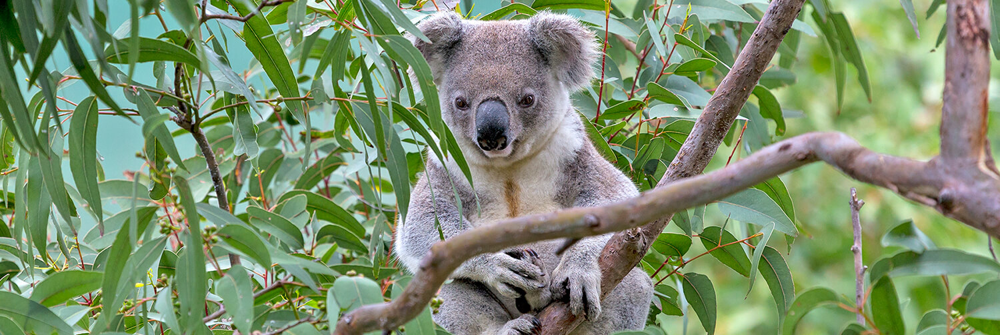Did You know? Koalas can sleep up to 18 hours a day
Did You know? Emus are the second largest bird in the world.
Did You know? Jaguars Are Skilled Swimmers
Did You know? Oryx can survive long period without water (even couple of weeks).
Did You know? Komodo Dragons Are Also Known As Oras.
Did You know? Fossas are the top predator in Madagascar
Did You know? Giant pandas spend 10-16 hours a day feeding, mainly on bamboo.
Did You know? Raccoons are smart animals with a great memory and a high IQ. They are excellent learners.
Did You know? Gharial Legs Are So Weak That They Can't Even Lift Their Bellies Off The Ground.
Did You know? Poison dart frogs are toxic due to the secretion of alkaloid toxins through glands in their skin.
Did You know? Giraffes only need 5 to 30 minutes of sleep in a 24-hour period!
Did You know? There are approximately 900 species of tarantula in the family Theraphosidae.
Did You know? Hippos can't swim or float! They walk or stand on surfaces below the water like sandbanks.
Did You know? Less Than 2% Of Polar Bear Hunts Are Successful
Did You know? Baboons are very strong animals and have sharp canine teeth similar in length to lions.
Did You know? Platypuses Don't Have Stomachs They Have A Gullet That Connects Directly To Their Intestines.
Did You know? The Green Anaconda Is The World's Heaviest Snake, But Not The Longest.
Did You know? the Tongue of Jackson's chameleon is usually 1/5th of its body length (that would be like a 6-foot tall person having a tongue that's 9-feet long)
Did You know? A harpy eagle's wingspan ranges from 5.9 to 7.4 feet (176 to 224 cm).
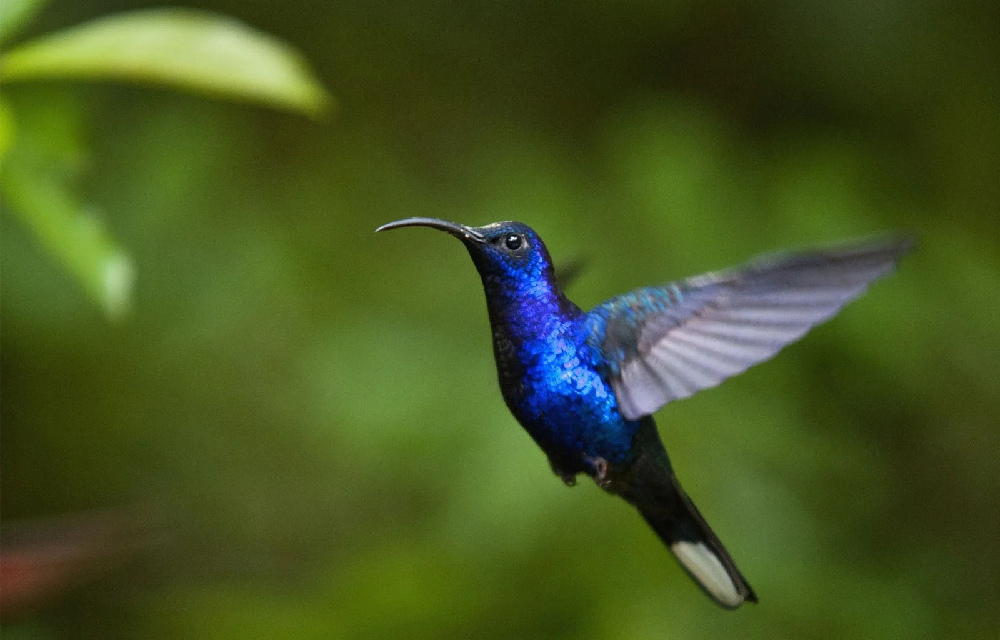Did You know? Hummingbirds are the only birds that can fly backwards
Did You know? Iguana has strong jaws with sharp teeth. They have very long and sharp tail that is usually half of the body size.
Did You know? Orangutans have an arm span of about 2.2 m (over 7 ft) from fingertip to fingertip.
Did You know? Burrowing Owls have a higher tolerance for carbon dioxide than other birds
Did You know? Peacocks Take 3 Years to Grow Their Tail Feathers
Did You know? Porcupine vision is poor, but they have an excellent sense of smell.
Did You know? Males Reindeer weigh 143 to 529 lbs. (65 to 240 kilograms), and females weigh 121 to 308 lbs. (55 to 140 kg).
Did You know? California sea lions are the fastest of all seals or sea lions, swimming at top speeds of 25 miles per hour (40 kmph).
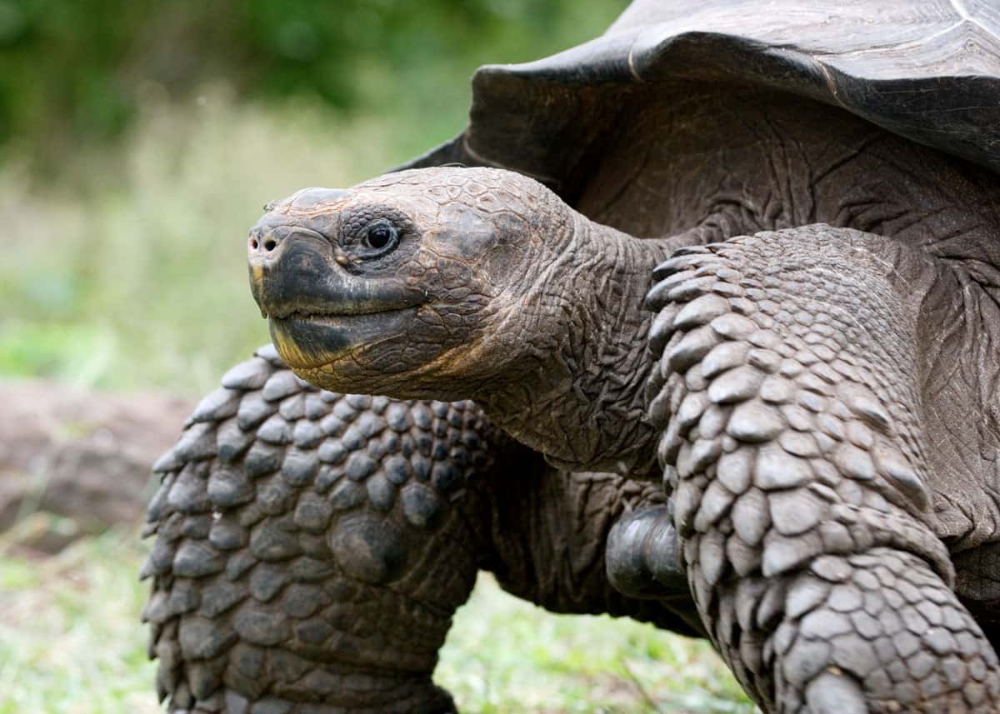Did You know? The largest recorded Galapagos Tortoise was nearly 6 feet long and weighed 919 pounds.
Did You know? Toucans are born blind.
Did You know? Cranes are powerful flyers, with some having the ability to fly over the Himalayas.
Did You know? Gecko's Eyes Are 350 Times More Sensitive to Light Than Human Eyes
Did You know? The Andean cock-of-the-rock is the national bird of Peru.
Did You know? An Alligator's Stomach Can Dissolve Bones.
Did You know? cassowary's can jump 5 feet off the ground
Did You know? Armadillos Are Closely Related to Sloths and Anteaters
Did You know? a pit viper can reach lengths of up to 6 feet, responsible for more than half of all venomous bites. can lead to infection, amputation, and death.
Did You know? leopard sharks don't have spots like the animal they are named after. It is sometimes called a cat shark.
Did You know? The wild population of babirusa's is estimated to be less than 10,000.
Did You know? Meerkats are immune to venom
Did You know? mountain lion can jump 15 feet high and 40 feet in distance
Did You know? The Andean bear is also known as the spectacled Bear, live in the Andes Mountains. (south america)
Did You know? leafcutter ant's Can Carry 50 Times Their Weight
Did You know? The flamingo is the national bird of The Bahamas.
Did You know? snow leopard cannot roar
Did You know? there are only 2000 estimated palm cockatoo's left in the wild
Did You know? Artic fox can survive frigid Arctic temperatures as low as -58 degree F
Did You know? A 9-pound coconut crab has a crushing force of 3,300 newtons
Did You know? Hyena's has a bite force up to 1,000 pounds of force per square inch.
Did You know? The Goliath bird-eating spider is one of the largest spiders in the world.They can weigh up to 175 g (6.2 oz).
Did You know? Honeypot ants measure anywhere from ¼ to ½-inch long. However, their size significantly expands when they devour food.
Did You know? The biggest lizard is the Komodo dragon.
Did You know? Naked mole-rats don't drink water.
Did You know? Newts have the ability to regenerate limbs, eyes, spinal cords, hearts, intestines, and upper and lower jaws!
Did You know? The closest living relatives to the manatee are the elephant and the hyrax.
Did You know? Cheetahs Don't Roar, They Meow and Purr.
Did You know? Rhinos can reach speeds of up to 30 miles per hour.
Did You know? Gorillas live around 35 years
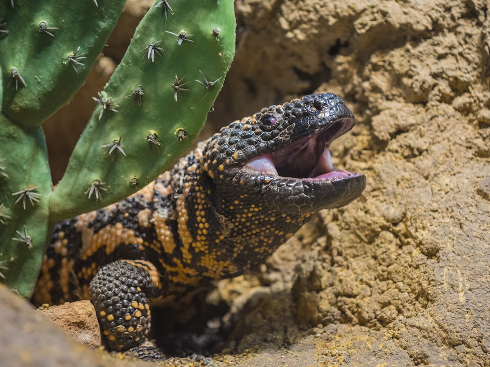Did You know? The Gila monster is one of only a few poisonous lizards in the world.
Did You know? It takes sloths 30 days to digest a leaf
Did You know? The African penguins can hold their breath over 2 minutes and dive over 400 feet deep!
Did You know? With up to 2,000 different species, cichlids fish comes in so many unique patterns and colors that it is almost impossible to find any defining characteristic.
Did You know? Tigers are good swimmers and can swim up to 6 kilometres.
Did You know? They Glow In UV Light, Some Scorpions Can Go a Year Without Food
Did You know? archerfish's mouth is like a squirt gun,it can shoot a jet of water at its target for up to 7 in (2 m), and it can shoot seven streams of water with one mouthful.
Did You know? North Atlantic right whales travel more than 1,000 miles (1,609 km) between calving grounds in the U.S. Southeast and feeding grounds in the U.S. Northeast and Canada.
Did You know? Dolphins don't drink sea water. They get the water they need from the fish they eat.
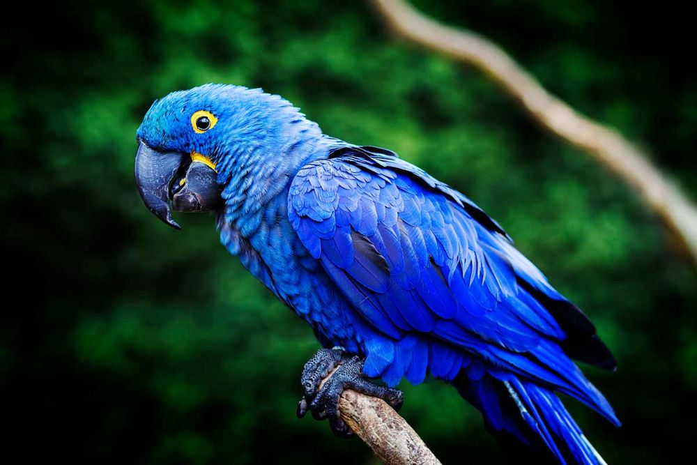Did You know? Almost all macaw species are either threatened, critically endangered or extinct
Did You know? Great hammerhead sharks are believed to be cannibalistic, eating their own species
Did You know? Some Kangaroos Can Hop 25 Feet
Did You know? Walrus can dive up to 90 m and stay underwater for long periods of time up to 30 minutes!
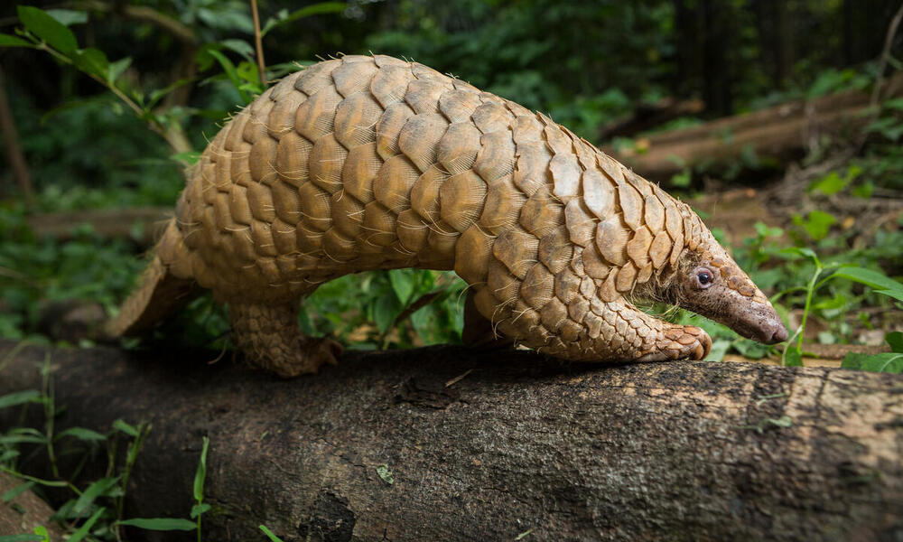Did You know? In China and Vietnam, pangolins are highly prized by consumers for their meat and their unique scales.
Did You know? manta ray flies sometimes 3 or 4 at time and reaching a height of 9 feet above the water, before returning to earth with a loud splash
Did You know? Millipedes Were the First Animals to Live on Land
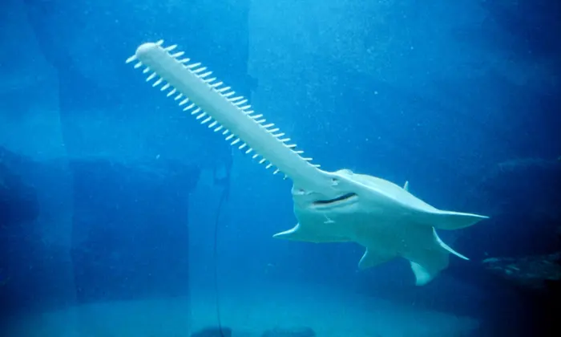Did You know? sawfish can reach upto 7 to 7.6 m (23–25 ft), and weigh as much as 500–600 kg (1,102–1,323 lb)
Did You know? Anteater's Have the Lowest Body Temperature of Any Mammal.
Did You know? The white colouration of beluga wahle is an adaptation to Arctic which allows them to camouflage in the polar ice
Did You know? Elephant shrew is one of the fastest small mammals,recorded to reach speeds of 28.8 kilometres per hour (17.9 mph)
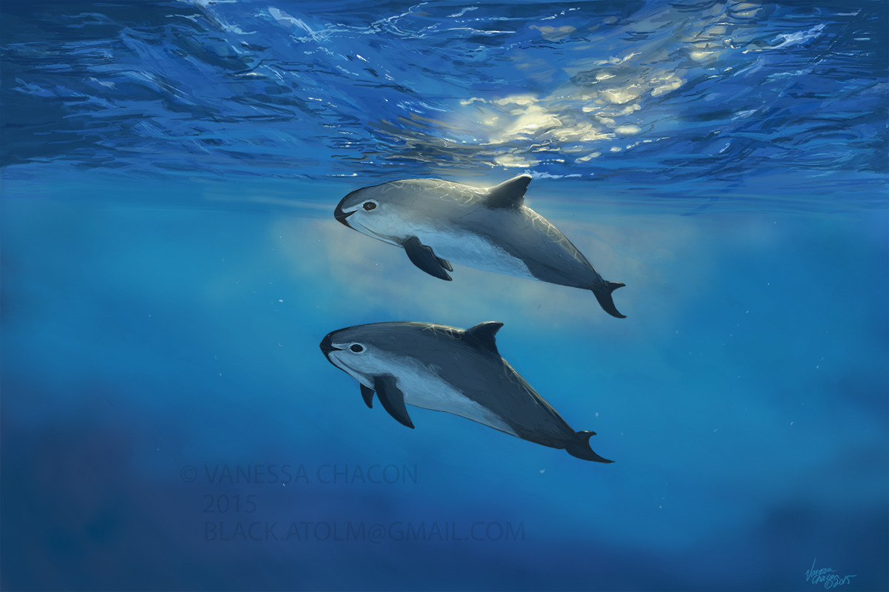Did You know? There are now fewer than 10 vaquitas left, with a total population decline of 98.6% since 2011.
Did You know? The plains bison is the largest land mammal in North America
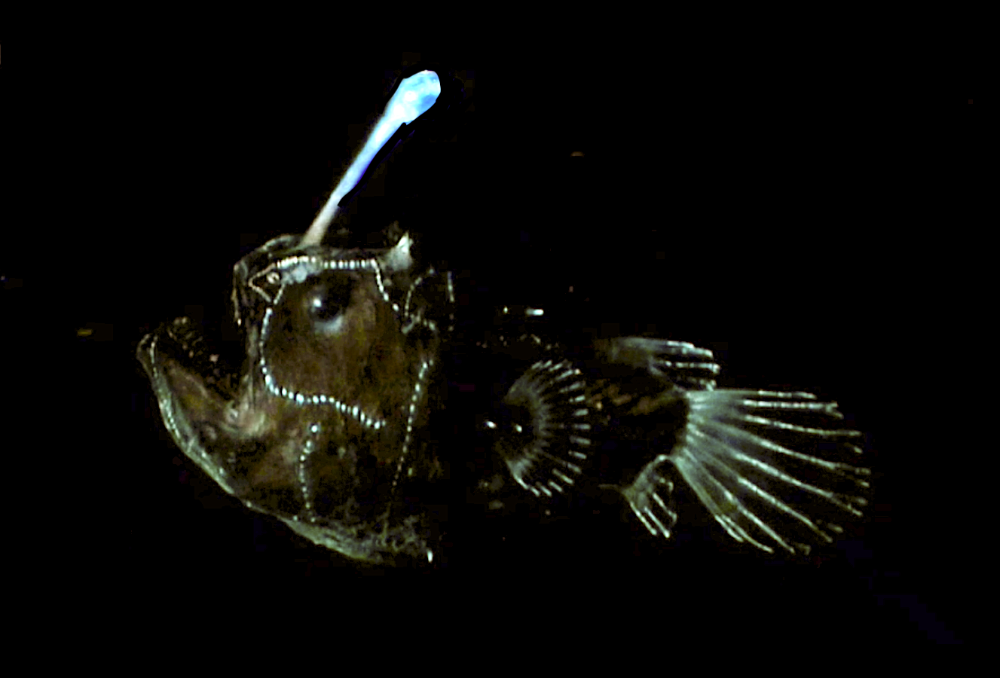Did You know? The anglerfish can extend both its jaw and its stomach to an incredible size, allowing it to swallow prey twice the size of its entire body.
Did You know? Horseshoe crab blood is bright blue. It contains important immune cells that are exceptionally sensitive to toxic bacteria.
Did You know? A puffin's beak changes colour during the year.
Did You know? among the deadliest marine animals in the world, box jellyfish are responsible for over 60 deaths in the last 100 years
Did You know? Starfish have no brain neither blood.
Did You know? Harpseals hunt for fish and crustaceans at 300 feet (90 meters) and may dive to nearly 1,000 feet (300 meters).
Did You know? Seahorses have superb camouflage capabilities
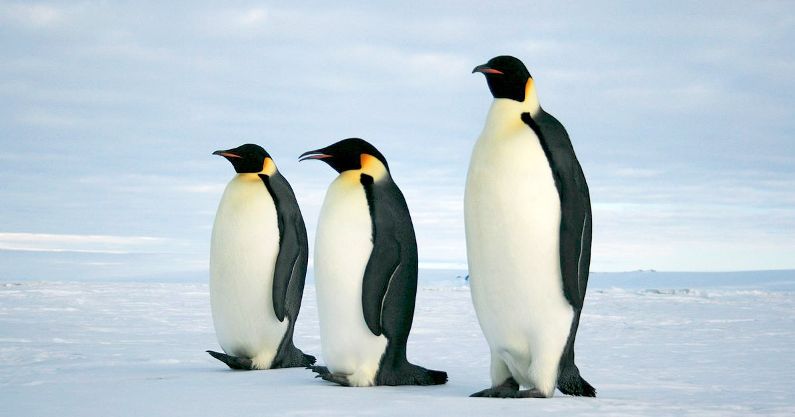Did You know? Emperor penguins are the world's largest penguins. The flightless birds stand up to 1.2 meters (4 feet) tall.
Did You know? There are only around 200 white tigers left in the world, according to the Indian Tiger Welfare Society.
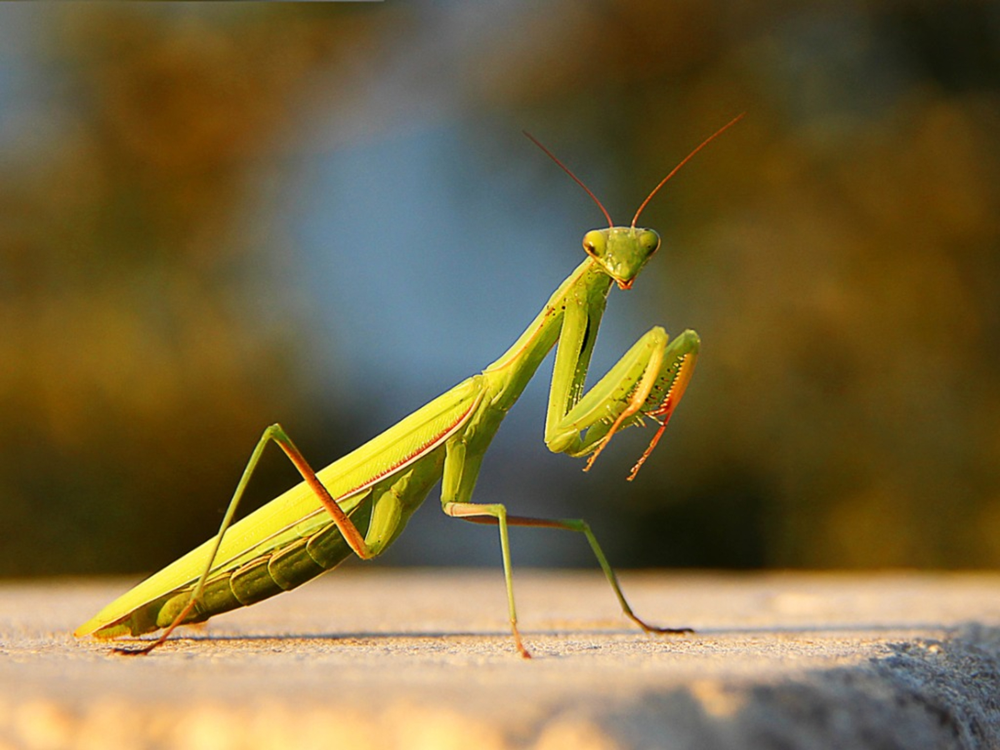Did You know? praying mantis Can Turn Their Heads a Full 180 Degrees
Did You know? The cuttlefish has three hearts, with two pumping blood to its large gills and one circulating the oxygenated blood to the rest of its body.
Did You know? The bush viper contains neurotoxic venom Also, there is no antidote available for the bush viper bite.
Did You know? The mantis shrimp can punch with the speed of a .22 caliber bullet triggering acceleration over 60mph
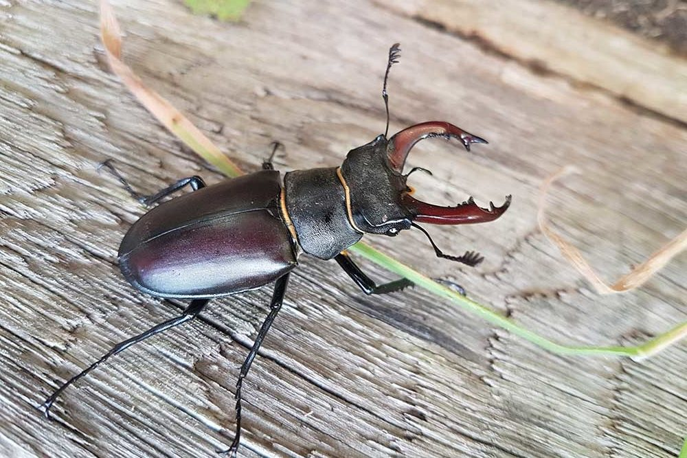Did You know? Stag beetles are slow-moving herbivores that climb well and can live upto 1 to 2 years
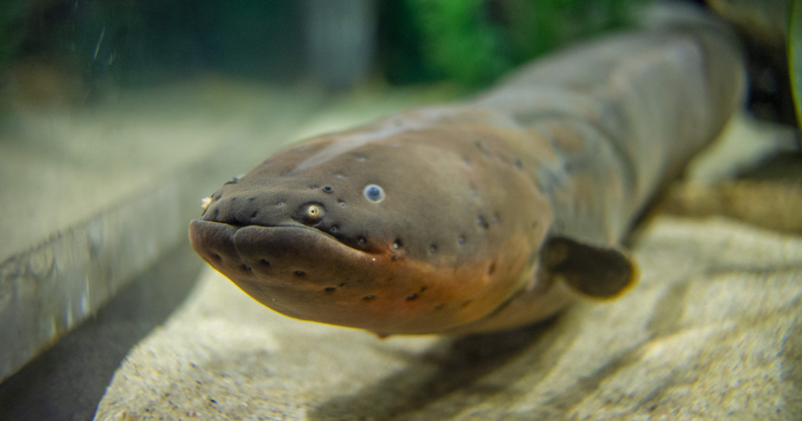Did You know? electric eel can generate a power of 600 volts, which is 5 time stronger than the electricity generated in the standard US wall socket.
Did You know? wolverine has bite force of 224 Newtons.
Did You know? A male orca can be nearly 10 metres in length and weight upto 10 tons (10,000kg).